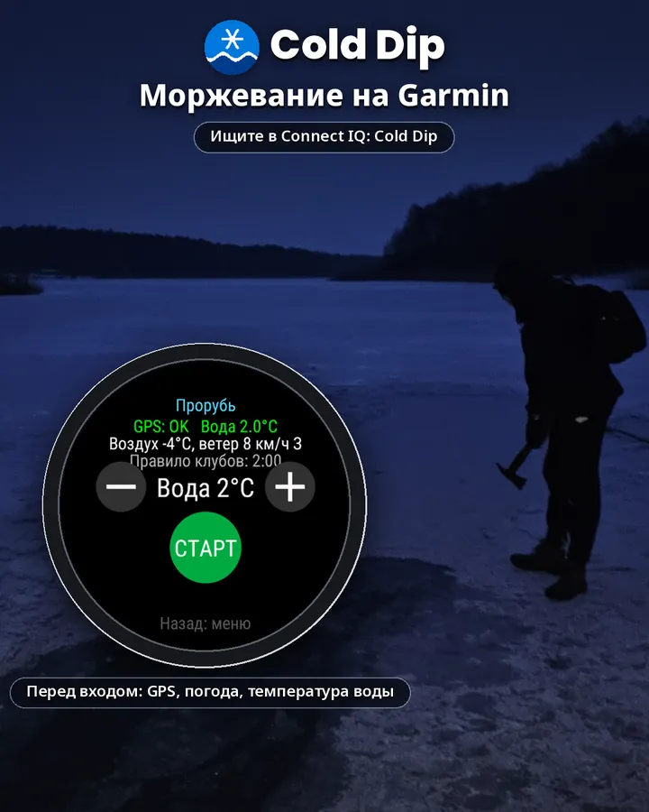
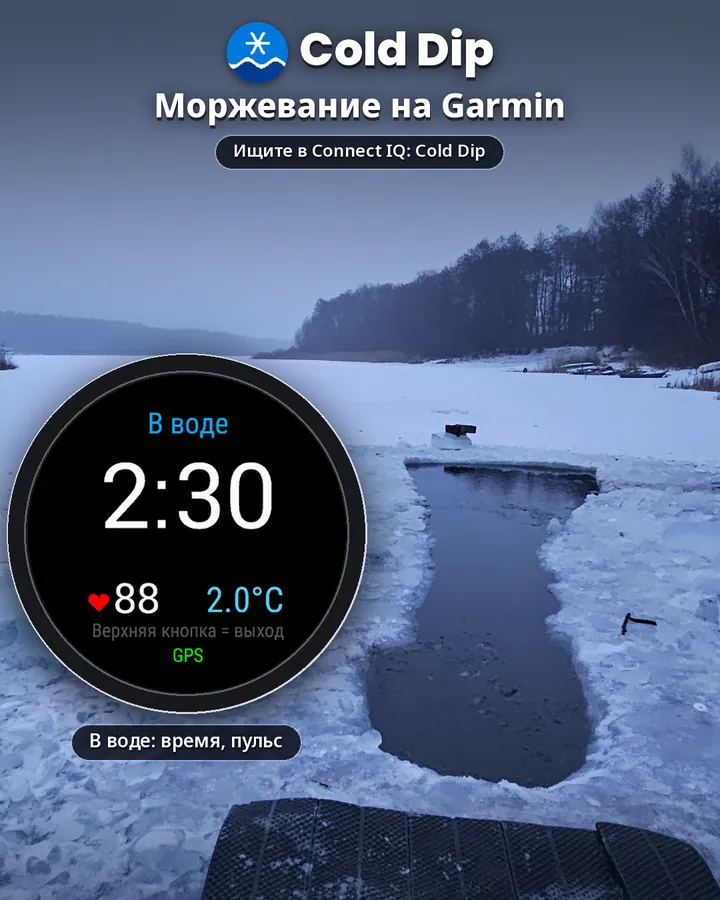
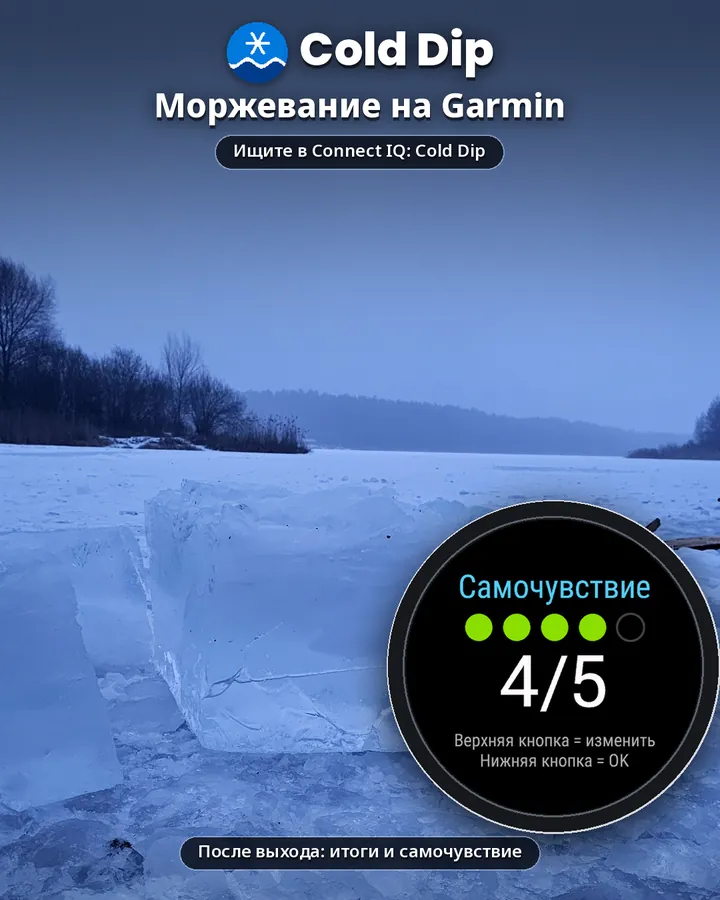
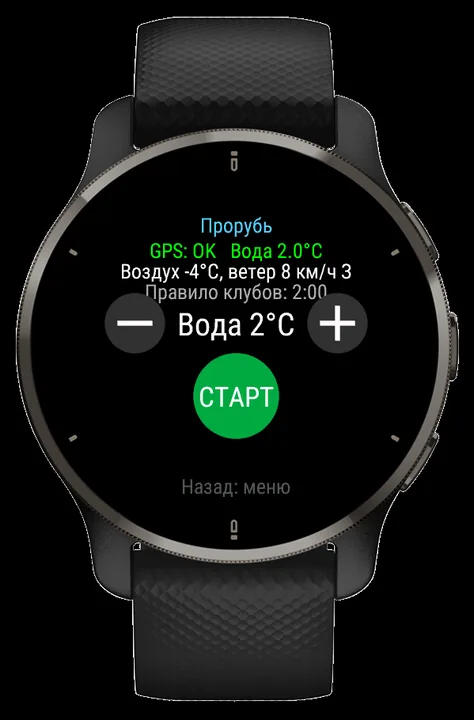
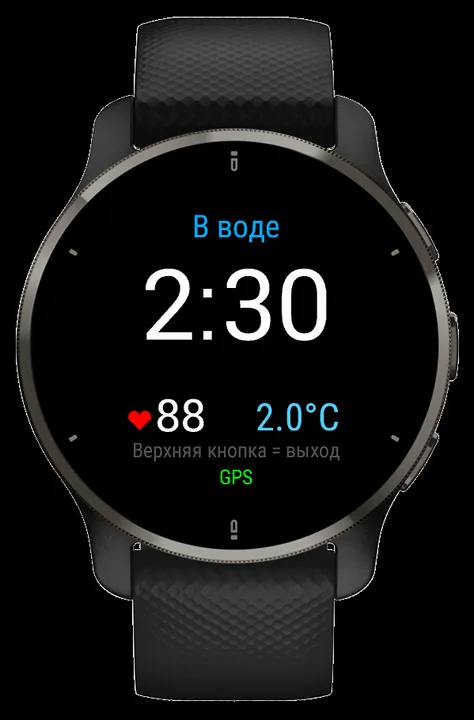
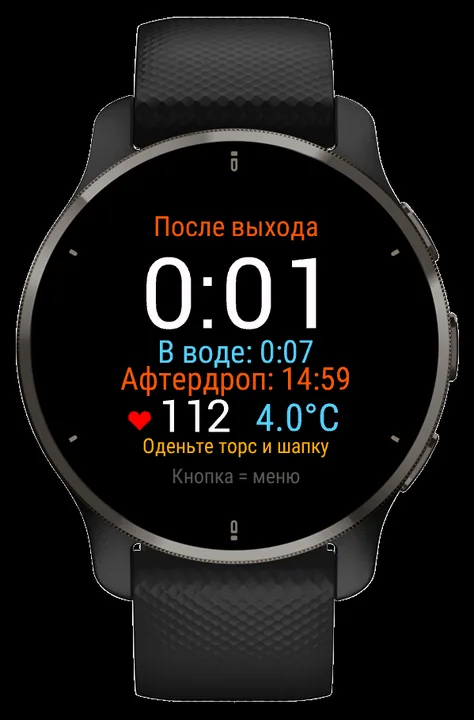

Mors – tarcza
Анимированный циферблат с моржом для моржевания
3,99 USD 24 часа бесплатной пробы
Скоро в магазине Connect IQ Скачать в Connect IQ Подробнее
На часах приложение называется «Моржевание».
Моржевание и холодные купания записаны как надо — не как плавание.
Или найдите «Cold Dip» в приложении Connect IQ на телефоне.



Циферблаты
Два циферблата с моржом для моржевания. Mors – tarcza меняется вместе с погодой. Mors Level растёт вместе с минутами сезона.
Анимированный циферблат с моржом для моржевания
3,99 USD 24 часа бесплатной пробы
Скоро в магазине Connect IQ Скачать в Connect IQ Подробнее

Игровой циферблат с моржом для моржевания
2,99 USD 7 дней бесплатной пробы
Скоро в магазине Connect IQ Скачать в Connect IQ Подробнее
Анимированный циферблат с моржом для моржевания
Морж реагирует на погоду: волны в хорошую погоду, шапка в мороз, стряхивает снег и прыгает в прорубь, когда пора моржевать. Время, дата, температура воздуха, погода, пульс, шаги и батарея. Анимация запускается при пробуждении часов — никогда в режиме постоянного экрана.
3,99 USD разовый платёж, плюс НДС, если он начисляется
Полноцветная анимация на часах AMOLED, например Venu 2, 2 Plus, 3 и 4, vívoactive 5 и 6, Forerunner 165, 170, 265, 570, 965 и 970, Fenix 8 и 9 (AMOLED), Epix 2, Descent Mk3, D2 Mach, Approach S70 и S72, Instinct 3 AMOLED и MARQ 2 и 3.
Этого циферблата нет на часах MIP и моделях с меньшей памятью, например Fenix 5 Plus, Fenix 6 и 7, Fenix Solar, Forerunner 245, 255, 745, 945 и 955, Enduro, Descent Mk2, vívoactive 4, Venu 1 и MARQ первого поколения. Эти экраны не покажут полноцветную анимацию.
Игровой циферблат с моржом для моржевания
Ваш морж растёт через 5 уровней вместе с минутами в холодной воде за сезон — вживую из бесплатного приложения Cold Dip. Зимой пар над прорубью, летом пляж, значок серии дней, температура воды, пульс, батарея и чистый режим постоянного экрана. Анимация пробуждения запускается, когда вы будите часы — никогда в режиме постоянного экрана.
2,99 USD разовый платёж, плюс НДС, если он начисляется · 7 дней бесплатной пробы
Чтобы уровень рос вживую — по минутам, серии и температуре воды — установите бесплатное приложение Cold Dip. Без него эти поля просто показывают данные часов.
НОВИЧОК 1/5


5 уровней
1/5
0–29 мин в этом сезоне
2/5
30–119 мин в этом сезоне
3/5
120–299 мин в этом сезоне
4/5
300–599 мин в этом сезоне
5/5
600+ мин в этом сезоне


Полноцветная анимация на 51 часах AMOLED, в том числе Venu 2, 2 Plus, 3 и 4, vívoactive 5 и 6, Forerunner 165, 170, 265, 570, 965 и 970, Fenix 8 и 9 (AMOLED), Epix 2, Descent Mk3, D2 Mach, Approach S70 и S72, Instinct 3 AMOLED и MARQ 2 и 3. Режим постоянного экрана использует очень мало светящихся пикселей.
Читаемый статичный циферблат на 19 часах MIP, в том числе Fenix 7, Fenix 8 Solar, Forerunner 255 и 955, а также Enduro 3 и 4. Всего Mors Level поддерживает 70 часов Garmin, на 11 языках.
Сделано для проруби, а не для бассейна. Решаете всегда вы.
Верхняя кнопка переключает этапы. Время в воде просто идёт — приложение никогда не говорит вам выходить. Это ваше решение. Последнее время — только ориентир, а не цель, которую нужно побить.
Пульс записывается всё время. Температуру воды вы вводите вручную, и она сохраняется в тренировке.
Температура воздуха, ощущаемая температура и ветер — из погоды Garmin на телефоне.
Место входа сохраняется и показывается на карте в Garmin Connect.
После каждого захода — короткая оценка самочувствия. Также пик и восстановление пульса, Body Battery и стресс до входа в воду.
Всё сохраняется в Garmin Connect как отдельная активность, а не как плавание.
Английский, польский, немецкий, чешский, словацкий, финский, норвежский, шведский, испанский, русский и украинский. Приложение само переключается на язык часов.
Forerunner, Fenix, Epix, Enduro, Venu, Vivoactive, Instinct 2 / 3 / E / Crossover и другие. Не поддерживаются очень старые часы, например Forerunner 920XT (Connect IQ 1.x).
Найдите свою модель. Список включает 133 модели в Cold Dip.
Очень старые часы с Connect IQ 1.x, например Forerunner 920XT, не поддерживаются. Pro нужен более новый аппарат — найдите свою модель, чтобы проверить.
Так Cold Dip выглядит на разных экранах Garmin.





Последние версии Cold Dip.
133 модели, включая Instinct 2, Instinct 2S, Instinct 2X, Instinct 3 Solar, Instinct E и Instinct Crossover, а также новый чёрно-белый макет для экранов MIP.
126 моделей, включая Forerunner 55.
105 моделей, включая прямоугольные макеты для Venu X1 и Venu Sq 2.
Первый выпуск.
“Działa idealnie” (Работает идеально)
Более 10 минут при 5°C — температура воды на часах, и все данные сохранились в Garmin Connect.
Несколько вещей, о которых чаще всего спрашивают после установки.
Установите его через приложение Connect IQ Store на телефоне — не через Google Play и не через App Store. На часах Cold Dip («Моржевание») будет в списке активностей / приложений.
В профиле «Прорубь» её задают кнопками − / + на стартовом экране. В остальных профилях — через меню: «Темп. воды вручную». Если в воде видно «--°C», температура ещё не задана.
Откройте активность, перейдите во вкладку «Статистика» и прокрутите до раздела «Connect IQ». Там будут пульс, температура воды, погода, самочувствие и время этапов. Плитки на экране «Обзор» задаёт сам Garmin — приложение не может их изменить.
Нет. Часы не умеют измерять температуру тела. Датчик показывает температуру самих часов, на которую влияют кожа и воздух. В Cold Dip температуру воды вы вводите вручную.
Калории оценивают сами часы по пульсу, Cold Dip их не считает.
Холодная вода — это серьёзно. Это общие напоминания о безопасности, а не медицинская рекомендация. Вы сами решаете, когда входить и когда выходить.
Всегда идите с тем, кто сможет помочь, если что-то случится, или убедитесь, что за вами кто-то следит с берега.
Если вы только начинаете, привыкайте к холоду постепенно, а не оставайтесь сразу надолго в очень холодной воде.
Многие начинают с короткого времени в воде и лишь потом постепенно его увеличивают. Нет времени, которое «нужно» выдержать.
Выходите из воды, как только чувствуете, что нужно: при сильной дрожи, боли, онемении, спутанности или просто когда уже достаточно. Cold Dip никогда не говорит выходить и не ставит время, которое нужно побить. Последний результат — только ориентир.
Как можно скорее вытритесь и согрейтесь, выйдя из воды. Тёплую одежду держите наготове ещё до входа.
После выхода температура внутри тела может ещё некоторое время снижаться, когда более холодная кровь возвращается из кожи и конечностей. Это часто называют afterdrop. Продолжайте согреваться, не торопитесь и подождите, пока вам действительно станет хорошо, прежде чем садиться за руль или на велосипед.
Cold Dip — приложение для записи активности, а не медицинское изделие, и не даёт медицинских рекомендаций. Оно не может сказать, безопасно ли вам входить в холодную воду. Если у вас есть заболевание, вы беременны или сомневаетесь, сначала поговорите с квалифицированным специалистом.
Короткий взгляд на одно погружение: от стартового экрана до сохранения в Garmin Connect.
Есть идея приложения или циферблата для Garmin? Давайте сделаем это вместе. Напишите мне и укажите, какие часы вы носите.
Если вы уже пользуетесь Cold Dip, отзыв в Connect IQ очень поможет — спасибо!
Cold Dip бесплатен. Если он помогает в моржевании, вы можете поддержать работу над ним.
Угостите кофе